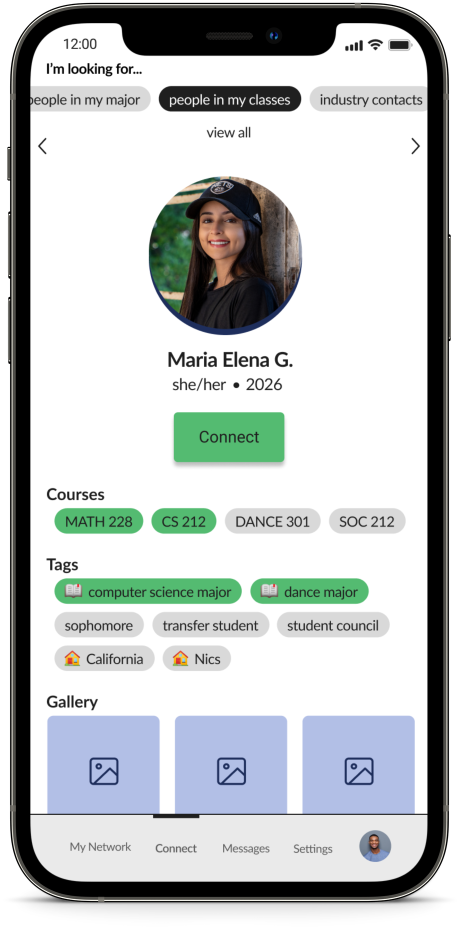

Project Overview
WesConnect, a purpose-built networking application, aims to bridge gaps between students at Wesleyan University, facilitating a seamless transition into college life and fostering connections designed to last.
Project Type: Personal project
Skills: Product design, UX/UI design, UX research
Ideation & Conceptualization
Recognizing the problem & identifying market opportunity
Wesleyan is home to a vibrant social scene full of multifaceted individuals with diverse backgrounds and intersecting identities. However, navigating this environment can be challenging and ultimately overwhelming, especially for first years, transfer students, international students, and students of other diverse backgrounds.
My interest in identifying solutions for seamless navigation of the college social scene was heavily influenced by the COVID-19 restrictions that lead to social isolation and fragmentation across grades and social groups.
By the spring of 2022, even after Wesleyan had made conscious efforts to roll back on these restrictions as national cases declined, “COVID bubbles,” born in isolation, persisted. The need for social engagement and accessible community-building resources became abundantly clear.
Focus groups were conducted to gather insight, address any potential concerns, and gauge enthusiasm for a Wesleyan-specific networking resource.
Understanding the Problem from the User Perspective
Key Takeaways From Focus Groups
“I feel secure in my friend group as a [rising] senior, but could definitely see myself benefitting from a Wesleyan networking app during my first or second year while I was still getting acclimated to campus.”
“Sometimes I wish I could branch out from my current circle, but don’t really know how because Wes can be so cliquey.”
“Being away from home for so long is tough for a lot of people. I would love to see a resource at Wes that helps connect people from similar backgrounds, so home doesn’t have to feel so far away.”
“My first year I spent a lot of time on my own and felt sort of isolated. Being able to meet people online takes a lot of stress out of making friends and meeting new people.”
Key Takeaways From Market Research & Competitor Analysis
Dating Apps: Tinder, Hinge, and Bumble, arguably the three most popular dating apps for college students, prioritize swiping and constantly browsing new connections, which keeps the user in a cycle of always searching for “something better.” Bumble BFF, the friend-finding option, prompts were useful in determining how and why people may connect on a platonic level.
Networking Apps: LinkedIn is also extremely popular with college students, especially as they begin to search for jobs and internships. Although LinkedIn is quite formal, the idea of making meaningful connections is a helpful framework to follow.
Neighborhood Apps: Nextdoor connects users with neighborhood-specific resources, but is far more anonymous than any dating app. Mostly used for offering services, classes, or selling items.
Low-fi Sketches
I started my design process with low-fidelity wireframes to configure the optimal layout and user-flow. My biggest challenge was formatting the landing page, as demonstrated in the ideations below.
I went into the design process thinking I wanted to display a few key functions on the landing page. I quickly decided this was too repetative as the browse tab would already be displayed on the primary menu. Thus, displaying the user's network in an organized format became the priority.
progression of landing page layout design
"final" sketches
User-Flow
flow chart demonstrating user interaction
When developing the flow chart, particular attention went into considering which identity categories are most relevant to college students, and how these identities might affect navigating the social scene at Wesleyan.
The "primary pages" are those represented on the menu, thus they are intended to be accessible at any point.
Visual Exploration & System Development
brand colors
The goal was to create a simple yet playful color palette with a fair amount of range. I was able to convey this through choosing predominatley primary colors.
Red and black were a must in constructing the palette in reference to Wesleyan's school colors.
central elements of the design system
simple logo mock-up using primary brand colors and circle motif
Final UI

My Network
Upon opening the app, the user can access the network they've built and easily view new connection requests. They have the option to view their network hollistically or use filters to guide the process.
By prioritizing access to one's existing network, there is a balance between the excitement of discovering new contacts and interacting with and making the most of existing connections.

Connect
When browsing connections, tags shared between users will be highlighted in green to emphasize shared interests, classes, identities, and more.
Users are also able to filter results to find exactly who they are looking for.
Profile
Users are able to fully customize and update their profiles to best convey who they are and what they’re looking for.
Moving forward, with further iterations it could be useful to implement an “about statement” for users to share exactly what they’re looking to get out of using WesConnect. This could also be a promising solution to accounting for edge cases, or things that aren’t encompassed within the tag system.